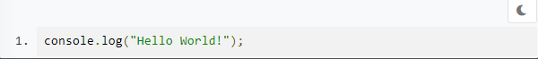
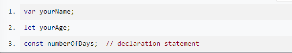
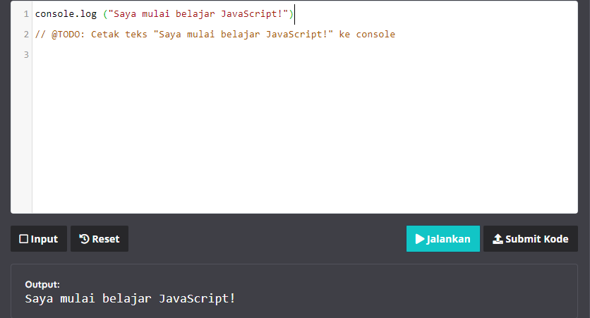

Menulis Kode JavaScript Pertama
Menulis kode dalam bahasa pemprograman sederhananya adalah menuliskan instruksi-instruksi untuk dijalankan oleh komputer. Kode di bawah ini merupakan instruksi bagi terminal atau konsol untuk mencatat (log) kalimat "Hello, World!".
console.log adalah kode bawaan JavaScript untuk menampilkan pesan ke konsol, bisa berupa web konsol atau konsol dari terminal/command prompt.

Kode atau teks yang berada di dalam tanda kurung adalah pesan yang ingin ditampilkan. Pada contoh kode diatas, kita menggunakan tanda kutip ("") untuk menandakan bahwa pesan yang ingin ditampilkan merupakan sebuah string atau teks. Kita akan membahas mengenai tipe data pada beberapa modul ke depan. Saat ini kita akan fokus untuk menampilkan teks terlebih dahulu. Sekarang cobalah untuk menampilkan nama Anda sendiri ke konsol.

JavaScript membagi instruksi secara umum menjadi dua jenis, yaitu expression dan statement.
Expression adalah unit kode yang dapat dievaluasi menjadi suatu nilai. Untuk lebih mudahnya, perhatikan contoh kode berikut.

Sementara itu, statement adalah instruksi untuk melakukan sebuah aksi tertentu. Aksi ini bisa termasuk membuat variabel, melakukan perulangan, pengecekan kondisi, dll.
Jika Anda masih bingung untuk membedakan expression dan statement. tidak perlu khawatir. Saat ini belum banyak kode yang bisa kita jadikan contoh. Namun, konsep ini akan banyak kita gunakan pada materi-materi yang akan datang. Yang perlu Anda ingat adalah:
Melalui materi yang kami sampaikan di atas seharusnya Anda sudah tahu cara menampilkan teks di console. Untuk pemanasan menuju materi lebih dalam lagi, yuk mulai selesaikan tantangan berikut.
Cobalah cetak teks "Saya mulai belajar JavaScript!" pada console melalui teks editor yang kami sediakan
Catatac : Pastikan pesan yang ditulis indentik dengan memperhatikan penggunaan huruf besar dan kecil.
Berikut beberapa catatan dalam menggunakan editor tersebut,
